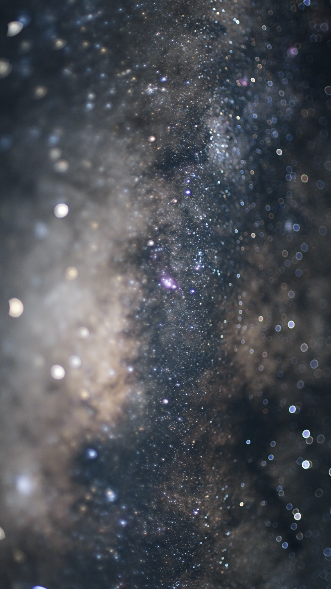
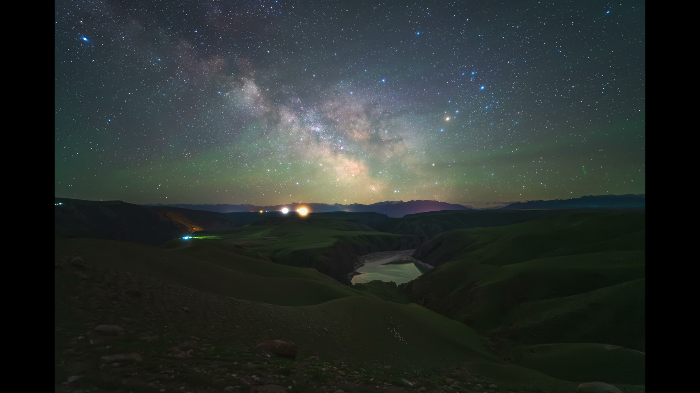
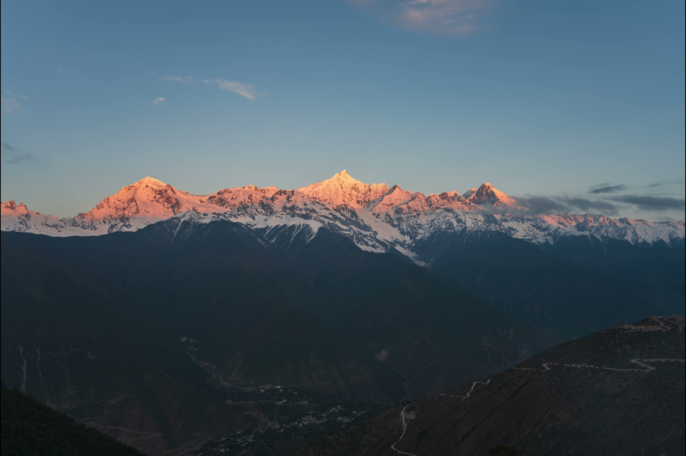
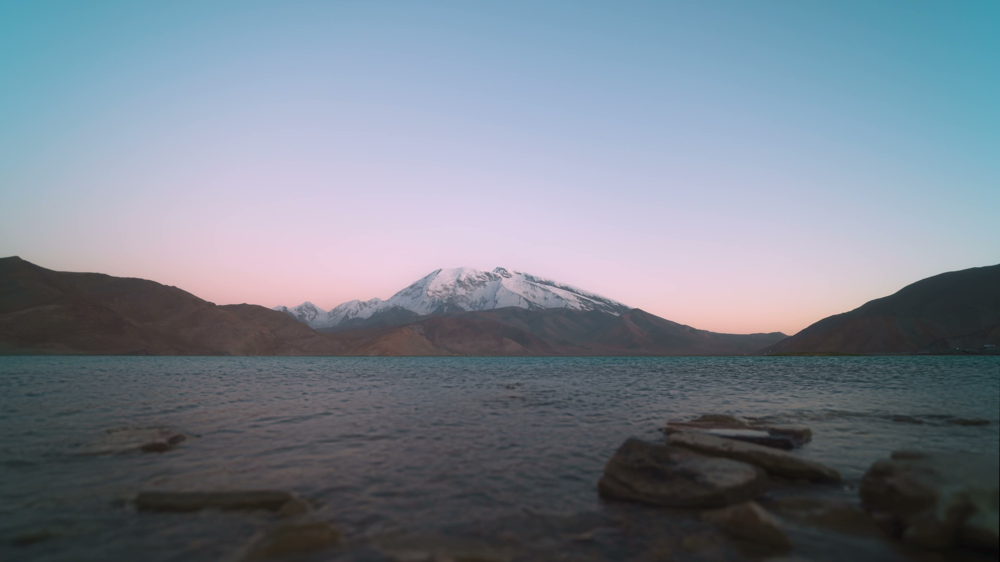

Chapter One
Milky Way · Night Sky
The Journey
每年三月到十月，银河核心从南半球升起，横跨北半球的夜空。为了等待完美的拍摄窗口，我在零下十五度的无人区支起三脚架，从日落守到日出。这些照片背后是无数次失败的曝光、冻僵的手指、以及按下快门那一刻的虔诚。

青海天峻石林，海拔3800米。零下十度拍摄，银河拱桥横跨石林之巅。

青海翡翠湖，盐湖倒映星空。夏夜微风，湖面如镜，银河垂落。

新疆鳄鱼湾，冬季零下二十度。河水蜿蜒，银河低垂天际线。

新疆公格尔九别峰，罕见黄道光与猎户座同框。十二月凌晨四点拍摄。

银河从峡谷缝隙中穿行而过

新疆

福建

内蒙古

青海

彗星

彗星

移轴摄影

移轴摄影
移轴摄影

移轴摄影
Location
青海 · 新疆 · 内蒙古 等地
跨越多个省份、八处拍摄地。从海拔 3800 米的石林到零下二十度的冬季河谷，每一次拍摄都是一场与自然和耐心的博弈。
8
拍摄地
120+
曝光小时
-25°C
最低温度
Chapter Two
Comets · Deep Sky · Tilt-Shift
Beyond the Visible
深空天体需要赤道仪精确跟踪、长时间曝光、以及复杂的天文后期处理。而移轴摄影则为这些遥远的星体赋予了一种奇妙的"微缩模型"感——仿佛宇宙也可以被捧在手心。

赤道仪跟踪，单帧 60s × 45 张叠加。离子尾与尘埃尾清晰可辨，在深空背景下划出璀璨痕迹。
Technique Note
移轴深空是本系列的独特尝试：使用七工匠 50mm F1.4 移轴镜头配合赤道仪，将广袤的星云与星系呈现出"微缩模型"般的视觉效果。这是天文摄影中少有人涉足的领域。
Chapter Three
Timelapse · Motion · Time
Time in Motion
延时摄影是第四维度的艺术。一张照片是瞬间的切片，而一段延时则是时间的河流。从日落到银河升起，从子夜到黎明破晓——每一段视频都是数小时、数千次快门的结果。

新疆鳄鱼湾 · 6小时拍摄 · 银河从升起到高悬的完整轨迹

云南梅里雪山 · 日出前30分钟开始拍摄 · 日照金山全过程

新疆慕士塔格峰 · 8小时不间断 · 日落→星空→银河→日出

月岩山 · 稻田与星空 · 夏夜蛙鸣中的银河流转
Epilogue
宇宙在膨胀，星辰在诞生与消亡。
追光的旅程不会停止。